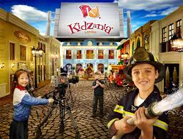
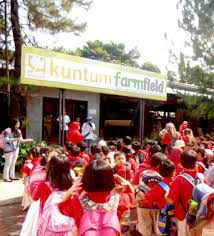
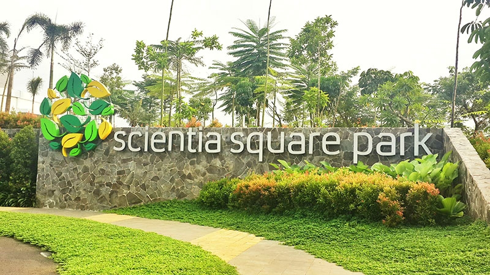

Tempat wisata akan memberikan pilihan permainan outdoor maupun indoor bagi anak-anak.
Berikut pilihan-pilihan tempat wisata yang berada di daerah Jabodetabek yang bisa kita kunjungi bersama anak.

KidZAnia
KidZania menawarkan konsep tempat wisata anak yang sedikit berbeda. Di sini anak diajak untuk belajar tentang aneka profesi di masyarakat dengan cara yang menyenangkan.
Anak juga akan diajak belajar akting dan belajar tampil di depan publik.KidZania adalah tempat wisata anak berjaringan yang pertama kali dibuka di Meksiko tahun 1999.
KidZania Indonesia bisa Anda kunjungi di Pacific Place Shopping Mall lt 6, Jl. Jend. Sudirman Kav 52-53, Kawasan Niaga Sudirman (SCBD), Jakarta Pusat.
Tempat rekreasi ini memiliki target usia anak-anak usia 2-16 tahun, yang bermain profesi seperti dokter gigi dengan boneka dan peralatan dokter gigi; doktor dengan ruang operasi, kantor polisi, studio televisi, sampai kantor pajak.
Anak anak juga bisa belajar akting dan langsung pentas.Tempat tempat profesi ini dinamakan paviliun, dan pada tahun 2013 Kidzania memiliki 71 paviliun. Anak anak yang termasuk dalam target pengunjung harus membayar tiket paling mahal yang harganya bervariasi tergantung hari kedatangan dengan nilai Rp. 150 ribu paling rendah dan Rp. 250 ribu paling tinggi (2015),
sementara untuk orang tua harga berkisar pada Rp. 100 ribu paling rendah dan Rp. 200 ribu paling tinggi (2015), dan batita dikenakan harga Rp. 50 ribu - Rp. 100 ribu (2015).

Kuntum Nurseries
Kuntum Nurseries adalah kawasan agrowisata terpadu yang menggabungkan konsep nursery, tempat rekreasi dan bermain.
Anak-anak dapat belajar bertanam disini, maupun melihat dan bermain dengan hewan-hewan di peternakan.Tempatnya yang mudah dijangkau dari lampu merah setelah tol Jagorawi merupakan sebuah pusat penjualan tanaman hias. Dengan fasilitas lain berupa cafe dan resto, Anda dapat juga menikmati hidangan khas Sunda sambil menikmati pemandangan sekitar.
Saat masuk ke lokasi, mata Anda akan disuguhi dengan pemandangan hijau nan asri dan udara yang bersih. Sejauh mata memandang akan terlihat berbagai jenis tanaman dan bunga yang tertata rapi.
Tips mampir ke Kuntum Farm Field:
Datanglah saat pagi hari supaya cuaca belum terlalu panas. Jalan-jalannya enak, bisa puas tanpa takut dehidrasi atau nggak nyaman karena sengatan matahari. Juga, kalo datang pagi belum terlalu rame orang jadi asyik main sama binatangnya.
Walopun baby udah bisa jalan, tapi mending bawa stroller. Anuh, walo farm ini nggak luas-luas amat, tapi ya lumayan gempor kalo nggendong terus pas baby nggak mau jalan. Ada jalan setapak yang halus dan asyik buat stroller kok.
Patuhi peraturan yang tertulis di dekat setiap kandang hewan. Misalnya jangan berdiri di suatu sisi (supaya nggak tertendang) atau cara memegang hewan seperti apa supaya binatangnya nggak mati.
Jangan lupa cuci tangan setelah selesai memegang hewan. Jaga-jaga aja, soalnya bayi kan suka jilat-jilat tangan toh?
Enjoy every moment, ajak anak bicara dan jelaskan tentang binatang apa yang sedang dipegang.

Scientie Park
Scientia Square Park adalah taman seluas 1,2 hektar di kawasan Scientia Garden yang berlokasi di Gading Serpong, Tangerang Selatan.
Di taman super luas ini ada hampir 10 kegiatan berbeda yang bisa dipilih untuk dinikmati anak bersama keluarga, mulai dari bermain di Science Playground, berkeliling taman, bermain di sawah, memberi makan ikan Koi, bermain mobil remote control, Wall Climbing, Bike Trail, Inline Skate, Skateboard, Futsal, Ping Pong Centre sampai mengenal berbagai jenis Kupu-Kupu di The Metamorphosis of Butterfly Park
Taman ini bisa menjadi alternatif kegiatan pengisi liburan bersama anak di ruangan terbuka. Anak-anak pasti senang sekali bermain di Playground Scientia yang luas dan unik, karena banyak permainan yang belum bisa didapati di tempat lain seperti Ayunan Bandul (Pendulum), Water Feature yang membuat semua kolam di taman ini mengeluarkan uap air. Dan hebatnya lagi jam operasional playground dan seluruh fasilitas taman dibuka dari jam 5 pagi sampai jam 9 malam, setiap hari!